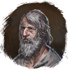

Факел
Предметы / Ключи
Открыть в интерактивной вики →
| Вес | 0 |
|---|---|
| Цена | 0 |
Описание
Нужен, чтобы осветить путь к логову  Вендиго.
Вендиго.
Получить можно бесплатно 25x один раз в день у
Этот предмет нельзя продать.
Вендиго. Получить можно бесплатно 25x один раз в день у

Старик.Этот предмет нельзя продать.
| Нужна, чтобы осветить путь в логово Вендиго. Предмет нельзя передать другим игрокам. |
Применение
|
Как добыть
|